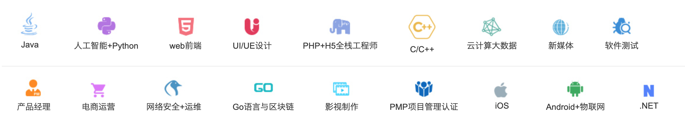
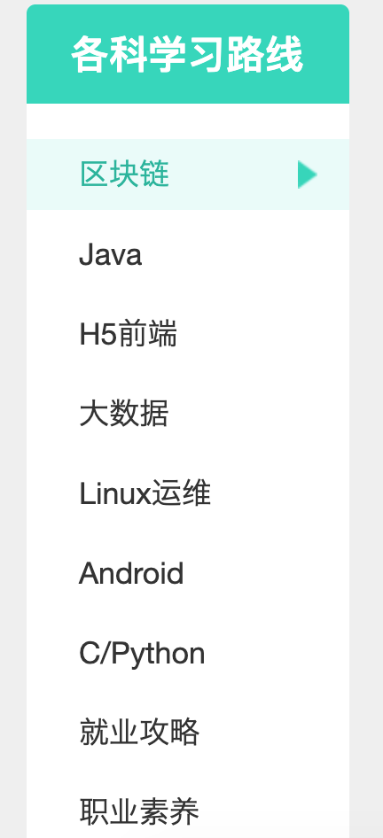

在开发职业发展中，想要学习一门新技术，怎么办？
最常见的是看文档，撸代码，看视频
分享几个技术更新及时学习的网站。基本都免费。各位按需使用。
1，黑马程序员视频库 http://yun.itheima.com/
传智播客及黑马程序员视频库涵盖了Java，人工智能Python，前端，大数据等多方向！

2，尚硅谷视频 http://www.atguigu.com/download.shtml
尚硅谷视频网站 涵盖了Java，Linux，大数据，区块链等

3，其他的网站
有免费的课程，也可能会涉及收费内容，比如 尚学堂 https://www.bjsxt.com/download.html 慕课网 https://www.imooc.com/ 腾讯课程 https://ke.qq.com/